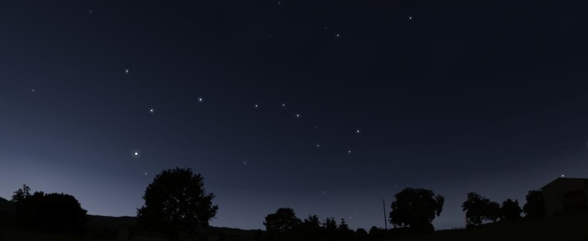

9 « She and he »
Песни разделённой любви in English and Russian
9.1 Introduction (Time for story-telling)
It's so beautiful outside,
it's so beautiful
and I want to be with you
when it's so beautiful
I want to share with you
my feelings of this weather
and I want so much
this time to last forever
to last forever
The flowers everywhere
are in bloom and smelling so nice
the sky is blue and clear,
such a pleasure for your ears and eyes
it's neither hot nor cold,
it's almost like in heaven
So please take a seat,
tune in and we will have it
we will have it.
It's time for story telling. 9.2 What I’d Like To Know
Dm/D,F,D,F
What I'd like to know is
Dm/D,F,D,F
Have you ever been kissed?
Bb/F,Bb,F,F
Have you ever been touched?
Gm Gdim/Am->Dm
This I'd like to know so much.
Dm Gm,7+,7
And I would mind if
Gm6 7+ 7 6
Your reply would be brief.
Gm6 Gm7 A7sus A7
But I just want you to be
Gm7 A(Adim) Dm/D,C,B,Bb(G,F,D)
Honest and sincere with me.
Tell me what disturbs your heart?
Why you feel uneasy now?
I know that I am not as smart.
But maybe I can help somehow.
I met you just a while ago
I wish I knew more than I do
I really want those things to know -
I feel that I'm in love with you...
Em Em7 A A7
D D#dim/D## H7 Hdim/C
Em Em7 A A7
Fdim/F F#7
G7 Edim/E
D74 G7+ Edim/E
D A#dim Em A
A Edim D D
D A#dim Em C
Edim Hm
G Edim
G Edim Em A 9.3 Beauty and Beast
I know you`ll be never mine
I know that it`s sad but true
I know that you even won`t find out
How much,
how sincerely I love you
It's only in fairy tales
The things happen as you wish them to
But in real life it's not the same
The beast
never finds a girl like you.
A girl like you.
Oh, o-oh. Oh..
Of course, somewhere long ago
I was naive and young.
I read a lot of happy sort of
stories about love.
But I grew older, things grew tougher
and I saw some years after
that it`ll never be like there,
it`ll never be the same.
It`ll never be the same
as in those old kind fairy tales
Verse 1 (singing as 2)
Verse 2 (singing as 1).
I need you
I want you
now...9.4 Strange Disease
Am G Dm
And nothing else can be done
Dm Am
than leave herself on her own
Am G Dm
Let tears of rain, smile of sun
Dm Am
inhale the breath in her soul
E Am G F E
Since I don't know it's you or me
Since I don't know it's he or she
E Am G F E
I can't tell anything of this strange, very strange disease
I would give her all I can do
But I can't do this, and it's true
All I can
is to pray
that the sun-rays
would melt smile
at her face
smile at her face
smile
at her face.
Once she was flower of white
Now she is fading away
Shadow of a pain in her eyes
She becomes weaker each day.
And I don't know what's going go on
How to stop it and what is wrong
I'm torn apart
when I think of her tender heart
All my efforts will be in vain
They will just aggravate her pain
So I go
and I pray
that the sun-rays
would melt smile
at her face
smile at her face
smile
at her face.
Instrumental
Verse 1
inhale the breath in her soul
inhale the breath in her so-ul9.5 From Romance To Philosophy
C F
I need somebody loving me
C A Dm
I need someone to share my hope and pain
G C
I cannot stand no more the life alone
E7 Am
So abandoned in this world
Dm Fdim C F#dim C
E Am Am Dm E Am (D) G
I do need somebody by my side
But when I find someone like you
who is so kind, so tender, so sincere
I get so scared that it's not for me
you must be already somebody`s
or that you will be gone one sunny day
Oh, Oh-oh, oh-oh-oh-oh ...
And then it will be even worse
'Cause in addition to the loneliness
I`ll feel the loss of you as of my hope -
Hope to find someone who loves
Life would lose then all its sense for me.
So what I want? - nobody knows.
A peace of mind or restless sleepless nights?
It's time to come up with an idea
Which would allow me to live here. -
Mind determines what a flesh would be.
Oh, Oh-oh, oh-oh-oh-oh ... 9.6 She Doesn’t Want It
C C
She doesn't want it, no
D D
So please leave her alone
Dm Dm
And don't bother her
G79 G## G
With your annoying signs of love
She has another
goal
There are some other
girls
So, don't be silly
go
And do not waste your time with her
R1: Cm
And please don't look so sad, so sad
You should be glad
You should be gla-a-ad instead,
F Fm
Cause she inspired you for song
F#dim
And didn’t obliged you
Fm G7
to anything at a-all.
Verse
R2: And now you're free, you can shout and scream
And you can do whatever you would only dream
You can put music on and sing along
And maybe even write
a very descent song!
She doesn't want it / Oo-ooh la-la-la / oh, this love… 9.7 You Are The One!
I looked for someone to love me
And now I know that you are the one
I want you to be
Days and nights with me
Share all the beauties of life
And now we`ll be together
And now we'll like a one
Whatever will be
Most likely will be
Which means we`ll be in love till the end of our day
R1:
I want you to be
Days and nights with me
I'm true when I say
that I will love every day
But if you don't care
But if you don't care tell me so
It will be so hard
For my heart
But I will go
And then I'll find somebody else
The one who will treasure my love
Who'd love to be helped
And who`d love to help
The one I can rely on
And then I will be ha-a-appy again
and she`ll feel very sad
She'll love to come back
and be love to be mine
But no that's so sad
that I won't change my mind
R2:
You want now to be
Days and nights with me
I know your are true
when you say that you love me too
But those days are gone
And we will be apart
I thank you for all you have done -
This song will stay in my heart! Verse a(b)
F D H Em D A (Dm)
R: Dm D#7 D7
Dm E0 A
G
Gm A7
C0 H7 9.8 On a lazy afternoon (Was it real?)
On a lazy afternoon
When you hold my hand in your hand
No you didn't understand
What you did - you've broken my heart
When you looked in my eyes
Talking to me so softly
And you could not disguise
What a feeling you brought to me
I realized in the moment -
I caught by your love
On a lazy afternoon
I confessed to you that I love you
And you told me that you love me too
And you knew that this was just the start
And the sky was so blue
And the grass was so soft and
the words "I love you"
where spoken and spoken
as we plunged ourselves in the depth
of the abyss of our love.
On a lazy afternoon
You where in my heart and in my legs (hands)
And I did not notice when
You vanished in the heat of summer day
I was all by myself
in a total confusion
What was it? Was it real?
Or it was my illusion?
I was there all alone, bare naked
with my broken heart.
On a lazy afternoon... Am F Bb7 F Am
Am Fm A7 Dm
F Fm E 9.9 For Every Girl and Boy
Every girl is waiting for someone to come
To kiss her, to hug her and make some love.
And if she is just standing all on her own,
Don`t doubt it she doesn't want to be alone
So, come and get her
Common, and take her!
Of course, be kind, polite, considerate, respect her.
she may know it yet
but She'll learn it later
And maybe then she will remember this day through all her life!
And the same is with guys, they're all much the same,
Nobody would like him be the one to blame
That he feels so sad, he feels so alone
When he is just standing all on his own
So, do not waste your time
Just come to him and smile
And you will see how fast how gently you can change his mind
And he will follow you
And you may like it too,
And maybe then, who knows, you'll end up with a happy life. 9.10 He and She
She was happy and he was happy
Living lives and being busy
Having job that satisfied
their feelings and their needs.
Many people would be jealous
knowing where they worked as well as
seeing how they lived and travel
being best in their deeds.
But sometimes something inside
told them that not all was right
There was something deep inside
Something they were thinking of
And they would not sleep at night
thinking about their lives
there was something missing there
And this something was their love.
They always knew what they liked to do
and they liked what they were doing too
They knew how to find their way
in the turmoil of rushing days.
And the days were passing by
With a guitar here am I
making up for you this story.
Is there something I forgot to say?!..
But sometimes (but sometimes)
Something inside (something inside)
being hide (being hide)
and cannot be denied (and cannot be denied)...
1: C#m A F#m F#dim A B-A-G## 9.11 Rose In a Bud
E E7+ C#m7 C#m Cm Hm
She's such a cool lady
Hm Hm7 E Eaug
She'll never be alone oah-oh-oah
A A7+ F#m F#m7
That's what we think but maybe
Hm Hm7 E Eaug
That's not the case at all-oah-oh-oah
A A7+ F#m Fm#7+ F#m Fm Em
Everybody tries to be with her
Em F#7 F##
Everybody tries to talk with her
Hm Hm7+ Bdim F#7
And nobody would ever guess
Hm (Hm7+)
she doesn't like men
E E
Oh, no
Em Em
Oh, yes
She's such a cool lady
she'll always be the same
years only make her better
she`s like a rose bud which doesn't die in flame
She attracts everybodys' minds
with the beauty of her sad blue eyes
But nobody will ever see
her real beauty / this flower blooming
Oh, yes / Oh, no 9.12 Last Goodbye
E
I know that I
A7
Just need you like
E
Like never I
C#7 Fm Fm
Like never I have done before
G#7
I got so close to you
C#m
I love you more and more
G#7
With every single day
E74 G#7
With every single hour
But now it's time
To say Goodbye
I know that's sad
But that's how things are going 'round
Sometime you feel so bad
Sometime you're falling down
D#74 G#7
But then you rise again
Dm7 D#74
And then you see how high
G#m
You are!!
So, let me go
Em
And tell "hello"
C## C#7
To you some other time, I don't know when though
Just tell me that you love me
That you'll always will
G#m
Just tell me so
Adim G##
And I will go
happily away
Gm Bdim
And maybe never see you again
Cdim Eb7
For tomorrow never knows...